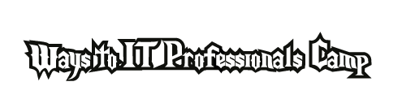
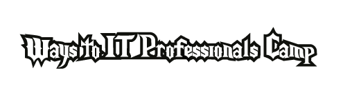

What is WIP Camp?

ค่ายเส้นทางสู่ฝันนักไอที (WIP Camp) คือ ค่ายสำหรับน้องๆ ผู้มีความสนใจด้านไอที หรือผู้ต้องการค้นหาตนเอง โดยน้องๆ จะได้มีโอกาสสัมผัสชีวิตของการเป็นนักไอทีอย่างแท้จริง ณ มหาวิทยาลัยเทคโนโลยีพระจอมเกล้าธนบุรี ระยะเวลา 5 วันเต็ม
ค่ายนี้เหมาะกับใคร
น้องๆ มัธยมศึกษาตอนปลายแผนการเรียนวิทย์-คณิต, ศิลป์-คำนวณ หรือสาขาใกล้เคียงน้องๆ ที่มีความสนใจด้านไอทีหรือต้องการค้นหาตนเองเพื่อศึกษาต่อในระดับมหาวิทยาลัยน้องๆ ที่ได้รับการอนุญาตจากผู้ปกครองโดยมีเอกสารเป็นลายลักษณ์อักษรถูกต้องน้องๆ ที่สามารถอยู่ร่วมค่ายค้างคืนได้ตลอดระยะเวลา 5 วัน
ค่ายนี้จัดเมื่อไหร่
เปิดรับสมัครเข้าค่าย
6 กุมภาพันธ์ 2558 - 7 มีนาคม 2558
ปิดรับสมัครเข้าค่าย
7 มีนาคม 2558
ประกาศผลผู้มีสิทธ์เข้าค่าย
27 มีนาคม 2558
เปิดค่าย!
25 พฤษภาคม 2558 - 29 พฤษภาคม 2558
สถานที่จัดค่าย

ค่ายของเรานี้จะจัดขึ้นที่"คณะเทคโนโลยีสารสนเทศ มหาวิทยาลัยเทคโนโลยีพระจอมเกล้าธนบุรี วิทยาเขตบางมด"สามารถติดต่อได้ตามรายละเอียดด้านล่าง
คณะเทคโนโลยีสารสนเทศ มหาวิทยาลัยเทคโนโลยีพระจอมเกล้าธนบุรี 126 ถนนประชาอุทิศ แขวงบางมด เขตทุ่งครุ กรุงเทพฯ 10140
คำถามที่พบบ่อย
ต้องทำอย่างไร ?
จะเข้าค่ายนี้ได้หรือไม่ ?
มีกิจกรรมไหม ?
ติดต่อสอบถาม
โทรศัพท์
06-2931-1726 (พี่เมย์)
06-2931-1727 (พี่แหวน)
อีเมล
wippo@wipcamp.com